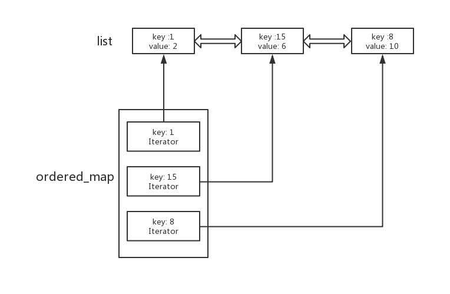

题目解析 创建一个LRU（Least Recently Used cache）最近使用的缓存会留在其中，最久的会被踢出去。这道题关键在于O(1)的时间复杂度。对于LRU需要一个类似队列的结构，同时当其中一个元素被使用后(get)，需要将其提到队列最后，这样就最晚被删除，寻找这个元素需要O(1)，那么得使用hashmap来贮存key对应的位置，同时提到最后 这个操作也需要O(1)，那么就需要使用双端链表，如果用vector，删除操作需要O(n).

方法 c++标准库中的list是双端链表，支持O(1)的头部尾部插入删除，forward_list是单链表。
1 2 3 4 5 6 7 8 9 10 11 12 13 14 15 16 17 18 19 20 21 22 23 24 25 26 27 28 29 30 31 32 33 34 35 36 37 38 39 40 41 42 43 class LRUCache {public : LRUCache (int capacity) { cap = capacity; size = 0 ; } int get (int key) if (m.find (key) == m.end ()) { return -1 ; } auto it = m[key]; auto kv = make_pair (key, it->second); l.erase (it); l.push_back (kv); it = prev (l.end ()); m[key] = it; return kv.second; } void put (int key, int value) if (m.find (key) == m.end ()) { if (size == cap) { auto it = l.begin (); m.erase (it->first); l.pop_front (); } else { size++; } } else { auto it = m[key]; l.erase (it); } l.push_back (make_pair (key, value)); auto it = prev (l.end ()); m[key] = it; } private : int size; int cap; list<pair<int , int >> l; unordered_map<int , list<pair<int , int >>::iterator> m; };